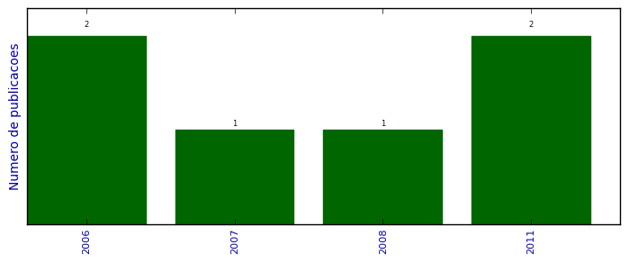

UFSM - Análise do Lattes
Artigos completos publicados em periódicos

Número total de itens: 6
(A1: 0, A2: 0, B1: 3, B2: 1, B3: 0, B4: 0, B5: 1, C: 1, Qualis não identificado: 0)
Legenda Qualis:
- Publicação para a qual o nome exato do Qualis foi identificado: Qualis <estrato>
- Publicação para a qual um nome similar (não exato) do Qualis foi identificado: Qualis <estrato> (nome similar)
- Publicação para a qual nenhum nome do Qualis foi identificado: Qualis não identificado (nome usado na busca)
2011
| 1. | Martins, M. ; VIZZOTTO, J. K. ; LIBRELOTTO, G. R.. Simulando o Modelo ORC-OR através de autômatos celulares quânticos. Revista Brasileira de Computação Aplicada. v. 3, p. 74-81, 2011.  [ citações Google Scholar | citações Microsoft Acadêmico | busca Google ] Qualis: B5 |
| 2. | VIZZOTTO, J. K. ; Du Bois, André Rauber. Modelling Parallel Quantum Computing Using Transactional Memory. Electronic Notes in Theoretical Computer Science. v. 270, p. 183-190, 2011. [ citações Google Scholar | citações Microsoft Acadêmico | busca Google ] Qualis: B1 |
2008
| 1. | VIZZOTTO, J. K. ; COSTA, A. C. R. ; SABRY, A.. Quantum Arrows in Haskell. Electronic Notes in Theoretical Computer Science. v. -210, p. 139-152, 2008. [ citações Google Scholar | citações Microsoft Acadêmico | busca Google ] Qualis: B1 |
2007
| 1. | ALTENKIRCH, T. ; GRATTAGE, J. ; VIZZOTTO, J. K. ; SABRY, A.. An Algebra of Pure Quantum Programming. Electronic Notes in Theoretical Computer Science, Chicago, Estados Unidos.. v. 170, p. 23-47, 2007. [ citações Google Scholar | citações Microsoft Acadêmico | busca Google ] Qualis: B1 (Electronic Notes in Theoretical Computer Science) |
2006
| 1. | REIS, T. A. ; BOUFLEUR, M. P. ; VELHO, H. F. C. ; VIZZOTTO, J. K. ; CHARAO, A. S.. Automatizacão da criacão de mapas com Google Maps. Disciplinarum Scientia. Série Ciências Naturais e Tecnológicas. v. 7, p. 129-136, 2006. [ citações Google Scholar | citações Microsoft Acadêmico | busca Google ] Qualis: C |
| 2. | VIZZOTTO, J. K. ; ALTENKIRCH, T. ; SABRY, A.. Structuring quantum effects: superoperators as arrows. MSCS. Mathematical Structures in Computer Science. v. 16, p. 453, 2006. [ citações Google Scholar | citações Microsoft Acadêmico | busca Google ] Qualis: B2 (Mathematical Structures in Computer Science) |
(*) Relatório criado com produções desde 1999 até HOJE
Data de processamento: 02/04/2014 17:53:38